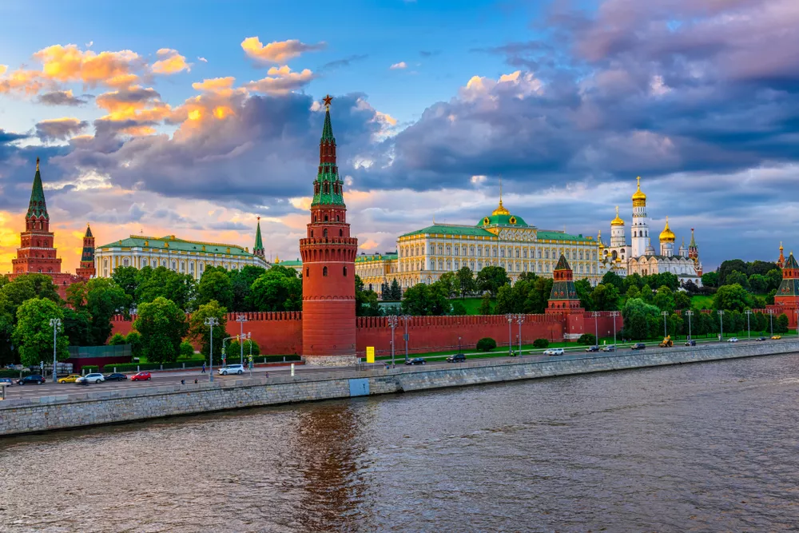
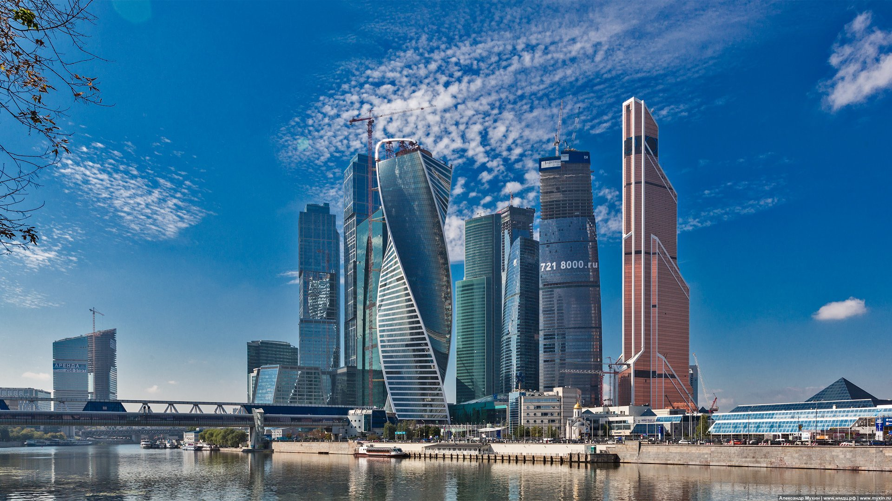

Красная площадь — туристическая мекка, мимо неё никто не пройдёт. Это исторический центр Москвы с краснокирпичными кремлёвскими стенами, музеями, мавзолеем, храмом Василия Блаженного и ГУМом. Часто люди гуляют по ней, фотографируются и идут дальше, а любители истории и иностранные туристы всё-таки заходят внутрь Кремля: там можно увидеть весь путь московского величия.
На самой площади, которая открыта с раннего утра до полуночи, в течение года проходят разные мероприятия, зимой там всегда заливают каток и ставят ярмарку, а по периметру располагаются музеи и храмы:
Прячутся от дождя или жары обычно в торговом центре «ГУМ» 1893 года, где находят легендарное мороженое в стаканчиках, изящные туалеты и множество брендовых магазинов.
2–3 часа хватит, чтобы пройтись по площади и Александровскому саду плюс зайти на экскурсию в один из музеев. Весь комплекс зданий и пространств, включая экскурсию по Кремлю, можно обойти часов за пять, как раз между завтраком и обедом.
Конечно, лучше попадать туда в будние дни, можно в районе обеда, когда основные туристические группы схлынут. Можно приходить туда не раз, чтобы по очереди посетить разные объекты, а потом гулять оттуда в разные стороны Москвы.
Приехав на станции метро «Охотный ряд», «Театральная» или «Площадь революции», направляйтесь к выходу на Манежную площадь. Выйдя из метро, вы увидите здание красного цвета с двумя остроконечными башнями — это Государственный исторический музей, вам в ту сторону.
Существует огромное количество экскурсий по Красной площади, музеям и Кремлю: от мистического тура до прогулки с фотографом. Они отличаются по цене и наполнению, со многими из них можно ознакомиться на этом сайте или на официальных страничках каждого объекта.
Вход на площадь свободный. В музеях доступно бесплатное посещение для лиц отдельных категорий без сопровождения экскурсовода. Посещение исторического музея стоит от 200 до 800 рублей с экскурсией, аудиогид — от 400 до 600 рублей, Кремля — от 350 до 1500 рублей в зависимости от количества объектов и услуг.
В советское время это был грандиозный выставочный комплекс, где была представлена продукция и достижения всех республик страны. Сегодня это место для познавательных прогулок — с фонтанами, красивыми цветниками и уникальными памятниками советской архитектуры. Здесь расположена знаменитая скульптура Веры Мухиной «Рабочий и Колхозница». В павильонах проходят разные выставки и работают музеи. Например, в одном из них можно бесплатно увидеть большой макет Москвы. Также можно посетить «Москвариум» — океанариум у павильона «Космос», где представлены разные морские обитатели и проходят шоу с дельфинами. Территория ВДНХ огромная — бывалые посетители советуют брать при входе в прокате велосипед, ролики или самокат или приходить со своими. Недалеко от станции метро «ВДНХ» находится музей космонавтики. Здесь можно увидеть уникальные экспонаты — чучела Белки и Стрелки, одежду и предметы быта космонавтов, заглянуть внутрь настоящего космического корабля, а также купить на память космическую еду в тюбиках.
«Москва-Сити» — не просто ультрасовременный деловой район. Спустя два с половиной десятилетия после начала строительства в 1998 году он стал культовой достопримечательностью столицы. Здесь можно найти множество вариантов для развлечений и отдыха — от шоппинга в торговом центре до визита в музей и на смотровые площадки. Рассказываем, чем заняться в «Москва-Сити» и что там можно посмотреть.
